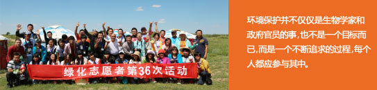
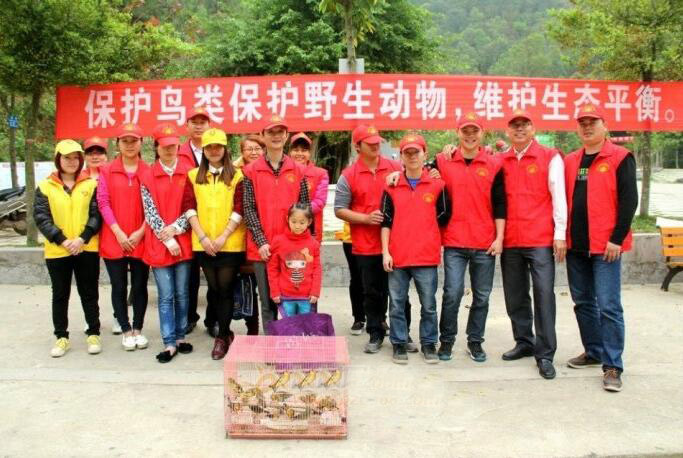

志愿者

志愿工作的出发点不是好奇心的满足，而是对社会的回报；志愿工作也不仅仅是给予他人帮助，更是为 了得到了收获――实现自我的成长；志愿者不是救世主，而是与被帮助者处于平等、相互尊重的地位； 志愿者也不是教育者、指挥者，而是用生命去影响生命。 如果您想为野生生物及其自然栖息地保护贡献一份自己的力量，如果你想用自己的热情和专业技能回馈 社会，帮助他人，请随时留意WCS官方网站及新浪官方微博，我们会不定期地发布志愿者招募信息。您 可以在本页下方直接注册成为我们的志愿者，待有需求时，我们会根据您的专长和经历来筛选适合您的 工作，并与您取得联系。

版权所有